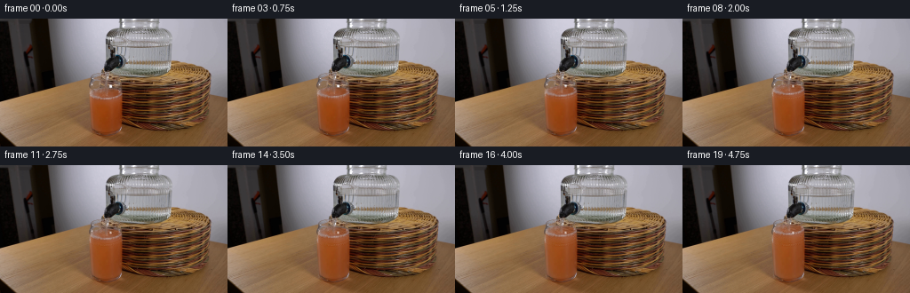
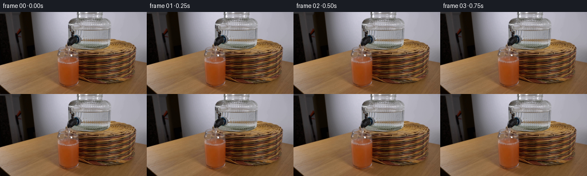
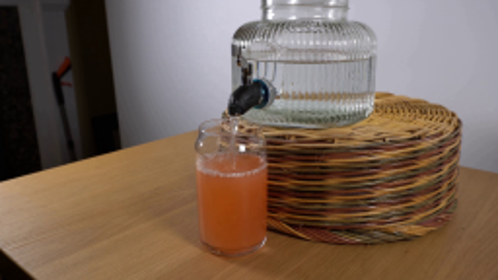
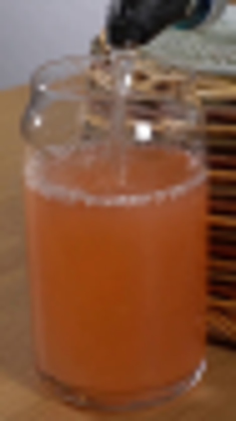
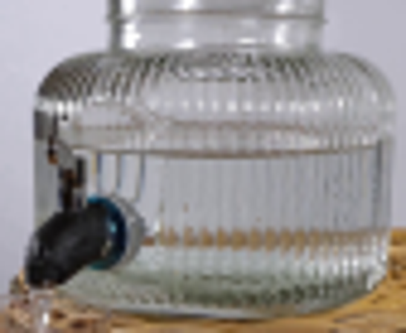
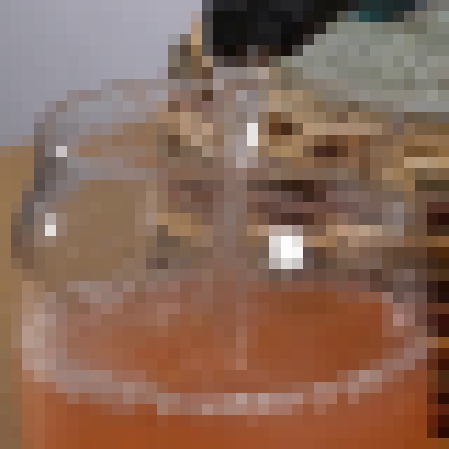
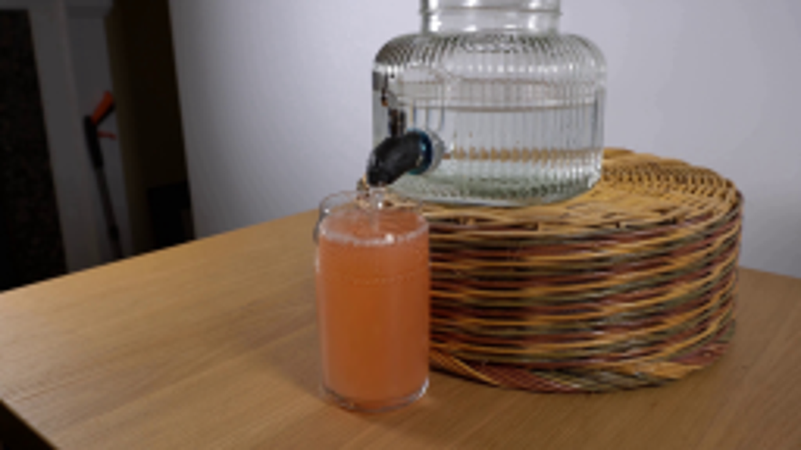

CODING AGENTS AS PIXEL WORLD MODELS
traex/GPT-6.1-Sol · 0186
点击播放 · 原生 RGB 像素
逐轮保存的候选
回放视频、检查图与代码变化。
每份候选均可单独播放。实际图片检查记录在下方工具轨迹中。
候选 01播放与检查图
点击播放 · 原生 RGB 像素


展开代码变化
--- 上一保存版本
+++ 本次保存版本
@@ -0,0 +1,119 @@
+from pathlib import Path
+import numpy as np
+from PIL import Image
+import cv2
+from artifact_io import save
+
+ROOT=Path(__file__).resolve().parent
+S=4
+im=np.array(Image.open(ROOT/'first_frame.png').convert('RGB'))
+H,W=im.shape[:2]
+base=np.array(Image.fromarray(im).resize((W*S,H*S),Image.Resampling.BICUBIC)).astype(np.float32)
+y,x=np.mgrid[0:H*S,0:W*S].astype(np.float32)
+x=(x+.5)/S-.5; y=(y+.5)/S-.5
+
+def smooth(a,b,v):
+ p=np.clip((v-a)/(b-a),0,1)
+ return p*p*(3-2*p)
+
+def sample(xx,yy):
+ return cv2.remap(base, (xx*S+(S-1)/2).astype(np.float32), (yy*S+(S-1)/2).astype(np.float32), cv2.INTER_CUBIC,borderMode=cv2.BORDER_REFLECT_101)
+
+def mix(image,color,alpha):
+ return image*(1-alpha[...,None])+color*alpha[...,None]
+
+# The glass, spigot, stand, and camera are fixed. Only the optical contents move.
+frames=[im.copy()]
+for i in range(1,20):
+ t=i/4
+ rise=2.64*t # constant volume flux through the open tap
+ center=84.5-rise
+ out=base.copy()
+
+ # Dropping free surface inside the fluted reservoir. The ribs and rim do not move.
+ drop=rise*.242
+ jar_mask=smooth(125.0,128.5,x)*(1-smooth(188.8,192.0,x))
+ jar_mask*=smooth(26,29,y)*(1-smooth(40,43,y))
+ disp=drop*smooth(27,30.5,y)*(1-smooth(38.0+drop,43.0+drop,y))
+ jar=sample(x,y-disp)
+ out=mix(out,jar,jar_mask*.86)
+
+ # Image-derived liquid: lift the meniscus and stretch the submerged column,
+ # preserving all of its photographic gradients, optical thickness and texture.
+ radial=np.sqrt(np.maximum(0,1-((x-119.3)/17.45)**2))
+ back=84.0-5.55*radial
+ newback=back-rise
+ low=128.0-1.4*((x-119.3)/18.0)**2
+ side=smooth(100.65,102.15,x)*(1-smooth(135.8,137.35,x))
+ bottom=1-smooth(low-.4,low+1.0,y)
+ wet=side*bottom*smooth(newback-.7,newback+.55,y)
+ # Move surface without vertical scaling, then taper displacement to zero at the base.
+ dy=rise*(1-smooth(center+10,128.2,y))
+ source_y=y+dy
+ rr=np.sqrt(((x-119.1)/1.85)**2+((y-center)/.62)**2)
+ waves=(.19*np.sin(rr*2.0-t*10.0)+.08*np.sin(rr*3.2-t*15.2))
+ waves*=np.exp(-rr/15)*np.exp(-((y-center)/6.5)**4)
+ source_y+=waves
+ # Gentle asymmetric circulating flow under the descending jet.
+ sx=x+.14*np.sin((y-center)*.38+t*3.2)*np.exp(-((x-119)/12)**2)*smooth(center+4,center+11,y)*(1-smooth(114,127,y))
+ liquid=sample(sx,source_y)
+ # Small progressive dilution by water. Clear liquid does not form a second layer.
+ dilution=(rise/(46.5+rise))
+ opacity=smooth(center+4,center+11,y)
+ # Retain orange pigment while increasing transmission and reducing saturation.
+ colchange=np.array([13.0,52.0,65.0],np.float32)*dilution
+ liquid+=colchange[None,None,:]*(.65+.35*opacity[...,None])
+ out=mix(out,liquid,wet)
+
+ # A few fixed glass reflections must not rise with the liquid.
+ glint=(np.exp(-((x-123.9)/1.1)**4-((y-75.5)/1.4)**4)*.64+
+ np.exp(-((x-101.3)/.65)**2-((y-73.7)/1.15)**2)*.7)
+ out=mix(out,base,np.minimum(glint,.78))
+
+ # Transparent, gravity-accelerated stream: irregular refracting edges rather
+ # than an opaque white stroke. The free fall shortens as the glass fills.
+ top=58.5
+ u=np.clip((y-top)/26.0,0,1)
+ axis=117.25+1.35*np.sqrt(u)+.11*np.sin(5.3*y-17*t)+.08*np.sin(2.1*y+11*t)
+ half=.85-.23*u
+ jet=(1-smooth(half-.23,half+.3,np.abs(x-axis)))
+ jet*=smooth(58.0,59.2,y)*(1-smooth(center-.5,center+1.2,y))
+ refr=sample(x+(.45*np.sin((x-axis)*2.8)+.13*np.sin(y*2.1-t*19)),y+.11*np.sin(y*2-t*24))
+ out=mix(out,refr,jet*.34)
+ edge=np.exp(-((x-axis-.40)/.22)**2)
+ twinkle=.35+.65*(.5+.5*np.sin(y*2.7-t*15.5))
+ light=jet*edge*twinkle*.19
+ out=mix(out,np.array([206,198,180],np.float32),light)
+ dark=jet*np.exp(-((x-axis+.59)/.19)**2)*.08
+ out=mix(out,np.array([82,80,70],np.float32),dark)
+
+ # Surface ripples, refracted highlights and entrained tiny bubbles.
+ impact=118.8
+ surface=smooth(newback-1,newback+.1,y)*(1-smooth(center+5.8,center+7.5,y))*side
+ ell=np.sqrt(((x-impact)/2.15)**2+((y-center)/.57)**2)
+ wave=np.sin(ell*2.45-t*10.4)*np.exp(-ell/5.5)
+ out+=wave[...,None]*np.array([2.4,2.1,1.8],np.float32)[None,None,:]*surface[...,None]
+ for k in range(9):
+ phase=(t*.69+k*.163)%1
+ theta=k*2.399+t*.31
+ r=1.4+phase*6.9
+ bx=impact+r*np.cos(theta)
+ by=center+.34*r*np.sin(theta)+.35
+ radius=.18+.11*np.sin(k*2.7)**2
+ d=np.sqrt(((x-bx)/1.0)**2+((y-by)/.7)**2)
+ ring=np.exp(-((d-radius)/.15)**2)
+ a=ring*.28*(1-phase)*surface
+ out=mix(out,np.array([197,169,149],np.float32),a)
+ # Small changing agitation at the impact point, without exaggerated splashes.
+ turbulent=np.exp(-((x-impact)/2.15)**2-((y-center)/.85)**2)*surface
+ out+=turbulent[...,None]*(2.5+1.8*np.sin(t*16))*np.array([1,1,.94],np.float32)
+
+ # Average only the change; untouched pixels remain exactly the locked-off source.
+ delta=(out-base).reshape(H,S,W,S,3).mean(axis=(1,3))
+ frame=np.clip(np.rint(im.astype(np.float32)+delta),0,255).astype(np.uint8)
+ frames.append(frame)
+frames=np.stack(frames)
+save(frames,ROOT)
+if __name__=='__main__':
+ (ROOT/'.tmp').mkdir(exist_ok=True)
+ Image.fromarray(frames[-1]).resize((1024,576)).save(ROOT/'.tmp'/'last_large.png')
可观测工具轨迹
实际执行的命令与返回图片。
命令 1exit 0
/bin/bash -lc "ls -la && cat prompt.txt && printf '\\n---RULES---\\n' && cat GENERATION_RULES.md"
命令 2exit 0
/bin/bash -lc "cat artifact_io.py && python - <<'PY'
from PIL import Image
im=Image.open('first_frame.png'); print(im.size)
im.resize((1024,576)).save('.tmp/start_large.png')
PY"命令 3exit 0
/bin/bash -lc "python - <<'PY'
from PIL import Image
im=Image.open('first_frame.png');im.crop((96,50,143,134)).resize((470,840)).save('.tmp/glass.png'); im.crop((112,0,196,69)).resize((672,552)).save('.tmp/dispenser.png')
PY"命令 4exit 0
/bin/bash -lc "python - <<'PY'
from PIL import Image,ImageDraw
im=Image.open('first_frame.png').resize((1024,576));d=ImageDraw.Draw(im)
for x in range(95,145,5):
d.line((x*4,180,x*4,552), fill=(200,80,80));d.text((x*4,540),str(x),fill='white')
for y in range(55,135,5):
d.line((380,y*4,580,y*4),fill=(100,150,200));d.text((570,y*4),str(y),fill='white')
im.save('.tmp/coords.png')
PY"命令 5exit 0
/bin/bash -lc "python - <<'PY'
from PIL import Image
im=Image.open('first_frame.png'); im.crop((99,54,139,94)).resize((640,640),Image.Resampling.NEAREST).save('.tmp/top_detail.png')
PY"命令 6exit 0
/bin/bash -lc "python - <<'PY'
import numpy as np
from PIL import Image
x=np.array(Image.open('first_frame.png'))
for y in [60,65,70,75,78,80,83,85,87,90,95,100,110,120,126,130]:
print(y,[(xx,x[y,xx].tolist()) for xx in [101,103,105,110,115,119,123,127,133,136,138]])
PY"命令 7exit 0
/bin/bash -lc "python - <<'PY' import importlib.util for m in ['numpy','PIL','scipy','cv2']: print(m, bool(importlib.util.find_spec(m))) PY"
命令 8exit 0
/bin/bash -lc "cat > generate.py <<'PY'
from pathlib import Path
import numpy as np
from PIL import Image
import cv2
from artifact_io import save
ROOT=Path(__file__).resolve().parent
S=4
im=np.array(Image.open(ROOT/'first_frame.png').convert('RGB'))
H,W=im.shape[:2]
base=np.array(Image.fromarray(im).resize((W*S,H*S),Image.Resampling.BICUBIC)).astype(np.float32)
y,x=np.mgrid[0:H*S,0:W*S].astype(np.float32)
x=(x+.5)/S-.5; y=(y+.5)/S-.5
def smooth(a,b,v):
p=np.clip((v-a)/(b-a),0,1)
return p*p*(3-2*p)
def sample(xx,yy):
return cv2.remap(base, (xx*S+(S-1)/2).astype(np.float32), (yy*S+(S-1)/2).astype(np.float32), cv2.INTER_CUBIC,borderMode=cv2.BORDER_REFLECT_101)
def mix(image,color,alpha):
return image*(1-alpha[...,None])+color*alpha[...,None]
# The glass, spigot, stand, and camera are fixed. Only the optical contents move.
frames=[im.copy()]
for i in range(1,20):
t=i/4
rise=2.64*t # constant volume flux through the open tap
center=84.5-rise
out=base.copy()
# Dropping free surface inside the fluted reservoir. The ribs and rim do not move.
drop=rise*.242
jar_mask=smooth(125.0,128.5,x)*(1-smooth(188.8,192.0,x))
jar_mask*=smooth(26,29,y)*(1-smooth(40,43,y))
disp=drop*smooth(27,30.5,y)*(1-smooth(38.0+drop,43.0+drop,y))
jar=sample(x,y-disp)
out=mix(out,jar,jar_mask*.86)
# Image-derived liquid: lift the meniscus and stretch the submerged column,
# preserving all of its photographic gradients, optical thickness and texture.
radial=np.sqrt(np.maximum(0,1-((x-119.3)/17.45)**2))
back=84.0-5.55*radial
newback=back-rise
low=128.0-1.4*((x-119.3)/18.0)**2
side=smooth(100.65,102.15,x)*(1-smooth(135.8,137.35,x))
bottom=1-smooth(low-.4,low+1.0,y)
wet=side*bottom*smooth(newback-.7,newback+.55,y)
# Move surface without vertical scaling, then taper displacement to zero at the base.
dy=rise*(1-smooth(center+10,128.2,y))
source_y=y+dy
rr=np.sqrt(((x-119.1)/1.85)**2+((y-center)/.62)**2)
waves=(.19*np.sin(rr*2.0-t*10.0)+.08*np.sin(rr*3.2-t*15.2))
waves*=np.exp(-rr/15)*np.exp(-((y-center)/6.5)**4)
source_y+=waves
# Gentle asymmetric circulating flow under the descending jet.
sx=x+.14*np.sin((y-center)*.38+t*3.2)*np.exp(-((x-119)/12)**2)*smooth(center+4,center+11,y)*(1-smooth(114,127,y))
liquid=sample(sx,source_y)
# Small progressive dilution by water. Clear liquid does not form a second layer.
dilution=(rise/(46.5+rise))
opacity=smooth(center+4,center+11,y)
# Retain orange pigment while increasing transmission and reducing saturation.
colchange=np.array([13.0,52.0,65.0],np.float32)*dilution
liquid+=colchange[None,None,:]*(.65+.35*opacity[...,None])
out=mix(out,liquid,wet)
# A few fixed glass reflections must not rise with the liquid.
glint=(np.exp(-((x-123.9)/1.1)**4-((y-75.5)/1.4)**4)*.64+
np.exp(-((x-101.3)/.65)**2-((y-73.7)/1.15)**2)*.7)
out=mix(out,base,np.minimum(glint,.78))
# Transparent, gravity-accelerated stream: irregular refracting edges rather
# than an opaque white stroke. The free fall shortens as the glass fills.
top=58.5
u=np.clip((y-top)/26.0,0,1)
axis=117.25+1.35*np.sqrt(u)+.11*np.sin(5.3*y-17*t)+.08*np.sin(2.1*y+11*t)
half=.85-.23*u
jet=(1-smooth(half-.23,half+.3,np.abs(x-axis)))
jet*=smooth(58.0,59.2,y)*(1-smooth(center-.5,center+1.2,y))
refr=sample(x+(.45*np.sin((x-axis)*2.8)+.13*np.sin(y*2.1-t*19)),y+.11*np.sin(y*2-t*24))
out=mix(out,refr,jet*.34)
edge=np.exp(-((x-axis-.40)/.22)**2)
twinkle=.35+.65*(.5+.5*np.sin(y*2.7-t*15.5))
light=jet*edge*twinkle*.19
out=mix(out,np.array([206,198,180],np.float32),light)
dark=jet*np.exp(-((x-axis+.59)/.19)**2)*.08
out=mix(out,np.array([82,80,70],np.float32),dark)
# Surface ripples, refracted highlights and entrained tiny bubbles.
impact=118.8
surface=smooth(newback-1,newback+.1,y)*(1-smooth(center+5.8,center+7.5,y))*side
ell=np.sqrt(((x-impact)/2.15)**2+((y-center)/.57)**2)
wave=np.sin(ell*2.45-t*10.4)*np.exp(-ell/5.5)
out+=wave[...,None]*np.array([2.4,2.1,1.8],np.float32)[None,None,:]*surface[...,None]
for k in range(9):
phase=(t*.69+k*.163)%1
theta=k*2.399+t*.31
r=1.4+phase*6.9
bx=impact+r*np.cos(theta)
by=center+.34*r*np.sin(theta)+.35
radius=.18+.11*np.sin(k*2.7)**2
d=np.sqrt(((x-bx)/1.0)**2+((y-by)/.7)**2)
ring=np.exp(-((d-radius)/.15)**2)
a=ring*.28*(1-phase)*surface
out=mix(out,np.array([197,169,149],np.float32),a)
# Small changing agitation at the impact point, without exaggerated splashes.
turbulent=np.exp(-((x-impact)/2.15)**2-((y-center)/.85)**2)*surface
out+=turbulent[...,None]*(2.5+1.8*np.sin(t*16))*np.array([1,1,.94],np.float32)
# Average only the change; untouched pixels remain exactly the locked-off source.
delta=(out-base).reshape(H,S,W,S,3).mean(axis=(1,3))
frame=np.clip(np.rint(im.astype(np.float32)+delta),0,255).astype(np.uint8)
frames.append(frame)
frames=np.stack(frames)
save(frames,ROOT)
if __name__=='__main__':
(ROOT/'.tmp').mkdir(exist_ok=True)
Image.fromarray(frames[-1]).resize((1024,576)).save(ROOT/'.tmp'/'last_large.png')
PY
python generate.py"命令 9exit 1
/bin/bash -lc "python - <<'PY'
import numpy as np
from PIL import Image
p=np.load('pixels.npz')['pixels']; src=np.array(Image.open('first_frame.png').convert('RGB')); rgb=np.stack([(p[:,:,0]>>16)&255,(p[:,:,0]>>8)&255,p[:,:,0]&255],-1).astype('uint8')
assert np.array_equal(src,rgb)
assert p.shape==(144,256,20)
print('Validated: 20 RGB frames, 256Ã144, exact original first frame.')
PY
command -v ffmpeg"视觉工具实际返回图片 1

视觉工具实际返回图片 2

视觉工具实际返回图片 3

视觉工具实际返回图片 4
视觉工具实际返回图片 5

视觉工具实际返回图片 6

视觉工具实际返回图片 7

保存候选 1 份；完成命令 9 次；可验证图片返回 7 张。原始 API 响应与完整日志保留在本地。